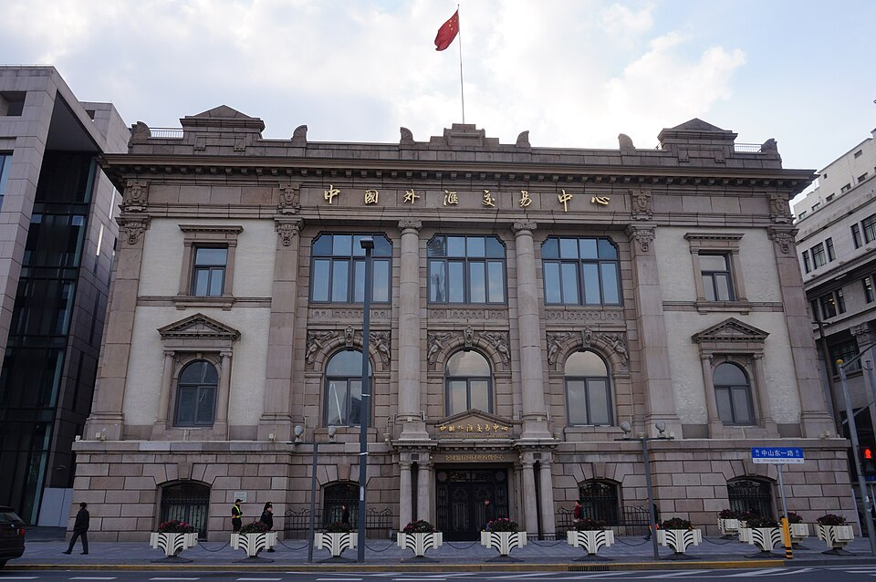

Бунд, 15. Дом 1902 года
外滩15号。1902年的房子
Русско-Китайский банк на Бунде外滩的华俄道胜银行
Русско-Китайский банк на Бунде, 15, придумали по инициативе Витте, устав утвердили в 1895 году. Правление было в Петербурге, главная контора по уставу — в Шанхае. Через банк шли деньги на КВЖД. Дом открыли в 1902 году, архитектор Генрих Бекер. Банк лопнул в 1926-м, с 1994 года в доме валютная биржа Китая.
外滩15号的华俄道胜银行是维特倡议创办的，1895年批准章程。董事会在彼得堡，章程把总行放在上海。中东铁路的钱经过这家银行。1902年新楼开幕，建筑师倍高。1926年倒闭，1994年起是中国外汇交易中心。
Чжуншань Дунъи-лу, 15, Бунд, район Хуанпу.
黄浦区中山东一路15号，外滩。

Прочитать за минуту一分钟读完
Русско-Китайский банк придумали по инициативе Витте. Устав утвердил Николай II в декабре 1895 года. Больше половины капитала дали французские акционеры.
华俄道胜银行是在维特的倡议下创办的。1895年12月尼古拉二世批准章程。一半以上的股本来自法国股东。
Узнать подробнее了解更多
Правление сидело в Петербурге. А главную контору устав поселил в Шанхае. Шанхайская контора открылась в феврале 1896 года, ещё не здесь, а на Бунде, 29. Служащих было пять.
Через этот банк в 1896 году пошли деньги на Китайско-Восточную железную дорогу. Из КВЖД потом вырос Харбин.
Участок на Бунде, 15, банк купил в 1899 году. Дом открыли в октябре 1902-го, архитектор — Генрих Бекер. Внутри мрамор, в хранилище электрический подъёмник. Китайская Википедия пишет другой год начала стройки, 1903-й. Я беру 1902-й по двум другим страницам и говорю о споре.
На фасаде были три головы: китаец в маньчжурской шапке посередине и два усатых русских по бокам. Над входом стояли две фигуры, Торговля и Промышленность. Во время «культурной революции» фигуры пропали, головы потом заменили львиными.
Дом осел. Чтобы войти, спускаешься на несколько ступенек. Низ окон почти на уровне тротуара.
В 1910 году Русско-Китайский банк слился с другим и стал Русско-Азиатским. Тот лопнул в 1926 году. С 1994 года в доме валютная биржа Китая.
董事会在彼得堡。可是章程把总行放在上海。上海分行1896年2月开业，一开始不在这里，在外滩29号。职员五个。
1896年起，中东铁路的钱经过这家银行。哈尔滨就是从中东铁路长出来的。
外滩15号这块地是1899年买的。房子1902年10月开幕，建筑师是海因里希·倍高。里面是大理石，保险库有电梯。中文维基写1903年才开工。我按另外两页写1902年，并把分歧说出来。
立面上原来有三个头像：中间是戴满洲帽的中国人，两边是两个留胡子的俄国人。门上还有两座雕像，代表商业和工业。文革时雕像不见了，头像后来换成了狮子头。
房子往下沉了。进门要往下走几级台阶。窗户下沿差不多跟人行道一样高。
1910年华俄道胜银行和另一家银行合并，叫俄亚银行。1926年它倒闭了。1994年起这里是中国外汇交易中心。
На карте在地图上
Важно не перепутать别弄混
Это не эмиграция, а Российская империя: банк старше революции. Первая контора 1896 года была на Бунде, 29, не в этом доме. Лопнул в 1926-м уже Русско-Азиатский банк.
这不是侨民，是沙俄时期：银行比革命早。1896年最早的办公室在外滩29号，不在这栋楼。1926年倒闭的已经是俄亚银行。
Вопрос для школьника给同学的问题
Почему главная контора российского банка оказалась в Шанхае, а не в Петербурге?
为什么一家俄国银行的总行设在上海，而不在彼得堡？
Что установлено точно已经核对过的
Устав 1895 года, французский капитал, контора 1896 года, КВЖД, дом 1902 года и архитектор Бекер, банкротство 1926, биржа с 1994. Страницы ниже.
1895年章程、法国资本、1896年开业、中东铁路、1902年的楼和建筑师倍高、1926年倒闭、1994年起交易中心。出处在下面。
Что пока требует проверки还要再核对的
Год начала стройки: 1902 или 1903 — источники спорят. Своего кадра с тротуара ещё нет.
开工年份是1902还是1903，资料不一致。人行道上我自己的照片还没有。
Источники этой страницы这一页的出处
- Русско-Китайский банк — Википедия. Витте, устав 1895 года, французский капитал, правление в Петербурге и главная контора в Шанхае, КВЖД, слияние 1910 года.维特、1895年章程、法国资本、董事会在彼得堡、总行在上海、中东铁路、1910年合并。
- Russo-Chinese Bank Building — Wikipedia. Контора с 13 февраля 1896 года, Бунд, 29. Дом открыт 26 октября 1902 года, архитектор Генрих Бекер, лифт. Банкротство 1926 года, валютная биржа с 1994-го.1896年2月13日开业，外滩29号。1902年10月26日新楼开幕，建筑师倍高，有电梯。1926年倒闭，1994年起外汇交易中心。
- 上海华俄道胜银行大楼 — 维基百科. Другой год начала стройки — 1903. Фигуры у входа разрушены во время «культурной революции». Закрытие 1926 года.写1903年开工。门口的雕像文革时被毁。1926年关闭。
- Магазета: Русско-Китайский банк (К. Князева, 2019). Пять служащих, мрамор, подъёмник в хранилище, три головы на фасаде и львы, ступени вниз ко входу, биржа с 1994 года.五个职员，大理石，保险库电梯，立面三个头像和狮子，进门往下走台阶，1994年起交易中心。
Рядом по смыслу:意思上相邻的： Консульство на Хуанпу, 20黄浦路20号领事馆
Последняя правка страницы: 19 ноября 2026. Это дата правки сайта, не дата исторического события.本页最近一次修改：2026年11月19日。这是网页的修改日期，不是历史事件的日期。